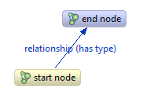
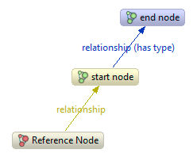

Graph database concepts
Graph data structures provide a flexible and intuitive way to model data. In graph theory (math) lingo you could say that Neo4j stores a rooted directed graph with label sets on both vertices and edges. But let's stick to the Neo4j terminology here:
- the node space is simply put your database
- in the node space you put nodes and relationships
- relationships have one start node and one end node
- relationships have an immutable relationship type
- both nodes and relationships have properties
- properties are key/value pairs
- property keys are Strings
- property values are String, char, long, int, short, byte, double, float, boolean or an [] of one of those
- the main entry point of the node space is the reference node
- both nodes and relationships have an id of type long
- relationship types have a name
This is how the basic elements fit together:

Revealing the reference node as well will give us this view:
